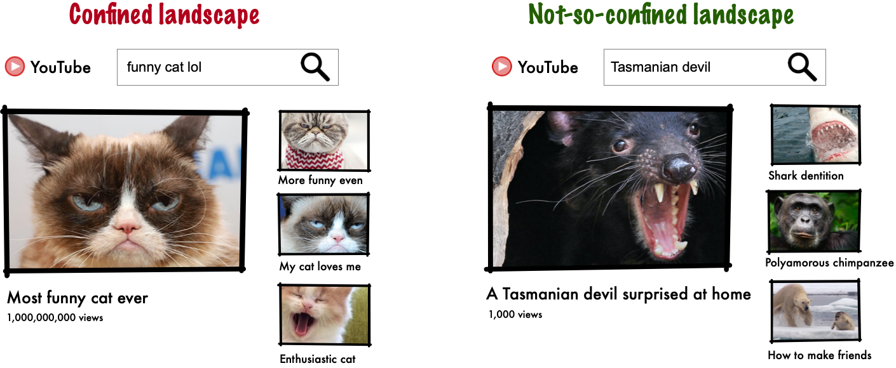
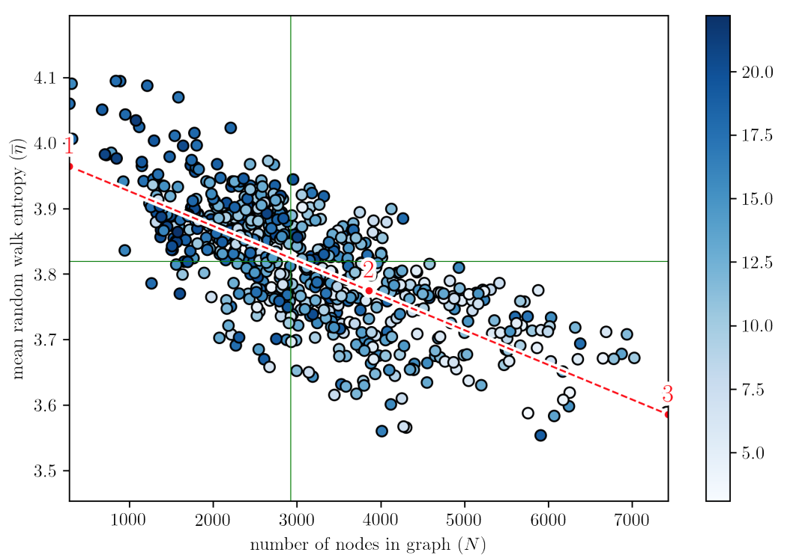
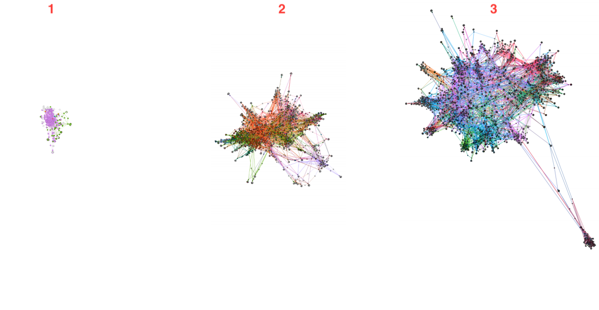

Contrarily to popular belief about so-called "filter bubbles", several recent studies show that recommendation algorithms generally do not contribute much, if at all, to user confinement; in some cases, they even seem to increase serendipity [see e.g., 1, 2, 3, 4, 5, 6].
Our study demonstrates however that this may not be the case on YouTube: be it in topological, topical or temporal terms, we show that the landscape defined by non-personalized YouTube recommendations is generally likely to confine users in homogeneous clusters of videos. Besides, content for which confinement appears to be most significant also happens to garner the highest audience and thus plausibly viewing time.
To simplify our findings very roughly and informally, let us say that there are two main stereotypes of YouTube videos: some with a high number of views, featuring loopy and not very diverse suggestions (left), and some with a low number of views, which generally feature more diverse and exploratory suggestions (right).
More technically:
- We have developed an innovative protocol to extract reliable video-centric recommendation graphs from YouTube based on a quantitative and longitudinal analysis of the platform's behavior.
- We show that video-centric recommendation graphs with higher entropies (in terms of navigation) counter-intuitively exhibit lower diversity (in terms of distinct number of accessible videos). Put differently, in this case, while a user may appear to visit more "locations", this however occurs within an overall smaller "space". In technical terms, video-centric recommendation graphs with higher entropies (in terms of navigation) counter-intuitively exhibit lower diversity (in terms of distinct number of accessible videos). Some videos are at the root of an isotropic navigation in a more limited space of videos. These videos are additionally amongst the most viewed.  
- We confirm with the help of a human-based validation protocol that topological confinement is associated with semantic confinement. In other words, recommendation graphs with higher entropies are not only smaller, they are also semantically more homogeneous. We further quantitatively nuance this phenomenon in terms of the intrinsic quality of videos (topics, consensus, audience).
- We demonstrate that there are several reasons to believe that the temporal evolution of recommendations associated with a video does not go against the above-mentioned phenomena – put shortly, newly-appearing recommendations over time are actually not so novel, often found in the vicinity of the initialy recommendations.